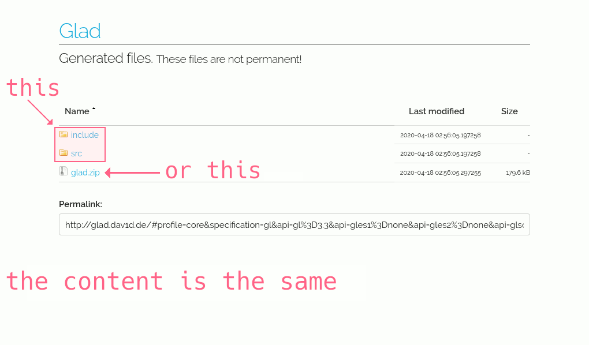

How to include GLAD
'Mini-guide'
Sunday 09 August 2020
### This is only, if the Python script is NOT used and you want to manually include GLAD ###
Most libraries (not all), are inside the folders of the operating system.
For that reason, the code refers to GLAD installed in the system.
#include <glad/glad.h>
But the files downloaded from https://glad.dav1d.de/, are in our folders. So, when we compile our project, the files of GLAD are not found.
Because, they are not in the system. They are where we have downloaded them!
When the files are in the folders of the operating system, we must use the minor/major symbols < >
Example:
#include <glad/glad.h>
If the files are in a custom folder, that not is of the operating system, we must use double quotes " "
Example:
#include "folder/glad/glad.h"
The .zip file created from https://glad.dav1d.de/, contains the same as downloading the "include" and "src" folders for separate.
That two folders also appear in the list of files to download, once we have generated the files by pressing the "GENERATE" button at the bottom of the web page.
Download the .zip file, or the folders. Not all!
Then in the same location where our "main.cpp" file is, copy the "glad.c" file that is in the "src" folder that we have downloaded and delete the "src" folder (we don't longer need the "src" folder, because we have copied the "glad.c" file inside our project).
Also in the same location where our "main.cpp" file is, copy the entire "include" folder downloaded (it contains the "KHR" and "glad" folders).
Make sure that in the top of your "main.cpp" file and out of the "main( )" method, you was put the "#include" with the path of our "include" folder using double quotes " " not < >
Open the "main.cpp" file and edit the "#include", to use our path with double quotes!
#include "include/glad/glad.h"
In my case, I had to modify the "#include" that is inside of the "glad.c" file.
So, "glad.c" can find our location of the header file "glad.h" using also double quotes " " not < >
Open the "glad.c" file and modify it, to use our path with double quotes!
Original:
#include <glad/glad.h>
Modified:
#include "include/glad/glad.h"
Also for create the library file of GLAD, I compile the "glad.c" file using "clang".
clang -c glad.c
And in the same place where the "o" file from the compilation made with "clang" is, execute in a terminal the "ar" command for generate an .a file.
ar rcs libglad.a glad.o
In this case the "ar" command is used to make the library static, so the linker does not dynamically search for the library in the folders of the operating system.
Only the static .a file from our "lib" folder will be used (we must manually place the .a file, inside our "lib" folder).
I have this folder structure...

The "include" folder, the "lib" folder, the "main.cpp" file and the "glad.c" file are all inside the same location!
And for example, to compile:
g++ main.cpp glad.c -o output -Lfolder -lglad -lglfw3
The option: -o output, is used to select a name for the executable file that will be created when the project has finished compiling and from which our final program will be executed (in this case, it is called: "output"). You can change "output", with whatever name you want (to avoid problems, don't use spaces or strange characters).
The option: -L, set the path where we have our "lib" folder.
And with the option: -l, we put the names of the libraries used by our project (one "-l", for each library we are using).
To run our program, execute in a terminal, the "output" file generated by the compiler.
./output